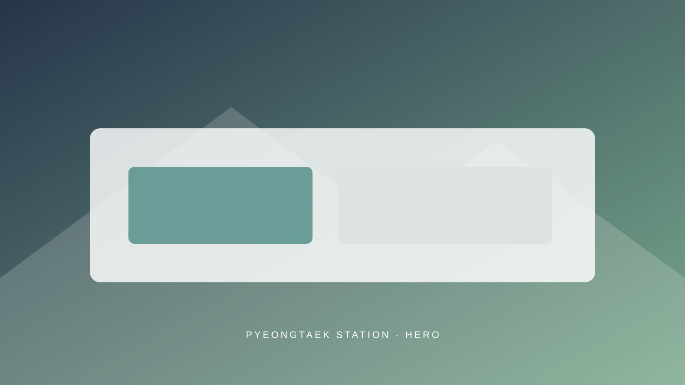

PYEONGTAEK STATION
L&C 소통 아카데미
평택역점
한 층 안에 교육과 소통을 위한 공간이
편안하게 구성되어 있습니다.
ABOUT THE SPACE
한 공간에서 이어지는
배움과 연결
L&C 평택역점은 한 개 층 안에서 교육과 대화,
참여 활동이 자연스럽게 이어질 수 있도록 구성된 공간입니다.
프로그램의 성격에 따라 강의, 대화, 활동과 모임 등
다양한 방식으로 활용됩니다.
- 공간 구성
- 한 개 층
- 주소
- 준비 중
- 운영 시간
- 준비 중
- 문의
- 준비 중
VISIT US
오시는 길
정확한 위치와 방문 정보가 확정되는 대로 안내하겠습니다.
- 주소
- 준비 중
- 건물명 및 층수
- 준비 중
- 대중교통
- 준비 중
- 전화
- 준비 중
- 운영 시간
- 준비 중
주소 확정 후
지도가 표시됩니다.LOCATION MAP
지도가 표시됩니다.LOCATION MAP
INSIDE L&C
평택역점 공간을
소개합니다
한 개 층 안에서 수업과 대화,
휴식이 자연스럽게 이어지는 공간입니다.
사진을 선택하면 크게 볼 수 있습니다.
PARKING GUIDE
주차 안내
주차 정보를 준비하고 있습니다.
방문 전 평택역점 문의처를 통해
주차 가능 여부를 확인해주세요.
- 주차 위치
- 준비 중
- 이용 가능 시간
- 준비 중
- 무료 주차 시간
- 준비 중
- 주차 등록 방법
- 준비 중
- 추가 요금
- 준비 중
- 인근 공영주차장
- 준비 중